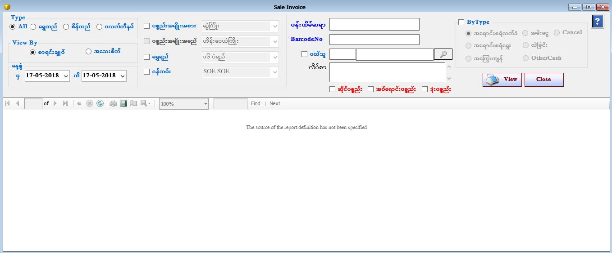

Sales Stock Report Setup

- Reports အောက်ရှိ Sales Stock Report ကိုဖွင့်ပါ။
- Sales Stock Report Form သည် ပစ္စည်းအရောင်းစာရင်းများကို ပြန်လည်ကြည့်နိုင်သော Form ဖြစ်သည်။
- အရောင်းစာရင်းချုပ် ကိုကြည့်လိုပါက စာရင်းချုပ် Button ကို on ထားပါ။ အရောင်းစာရင်း အသေးစိတ်ကို ကြည့်လိုပါက အသေးစိတ် Buttton ကို on ထားပါ။ ပစ္စည်းအရောင်းစာရင်းများကို ရွှေရည်၊ ပစ္စည်းအမျိုးအစား၊ အမျိုးအမည် အလိုက် ကြည့်နိုင်ပါသည်။ ဝန်ထမ်း Checek Box ကို on ထားပါက ဝန်ထမ်းတစ်ယောက်ချင်း စီ၏ ပစ္စည်းအရောင်းစာရင်းချုပ်ကို ကြည့်ရှုနိုင်မည် ဖြစ်သည်။ ဝယ်သူ Check Box ကို on ထားပါက ဝယ်သူကိုရွေးချယ်ပြီး ဝယ်သူ တစ်ယောက်ချင်းစီ ဝယ်ယူထားသော ပစ္စည်း စာရင်းများ ကို ကြည့်ရှုနိုင်မည် ဖြစ်သည်။
- မိမိသိလိုသော Barcode တစ်ခုကို Barcode No တွင် ရိုက်ထည့်လိုက်ပါက ထို Barcode နှင့် သက်ဆိုင်သော အသေးစိတ် အချက်အလက်များကို တွေ့ရမည် ဖြစ်ပြီး အရောင်းထွက်ပြီးသော Barcode ဖြစ်ပါက အရောင်နှင့် ပြနေမည် ဖြစ်ပြီး အရောင်းမထွက် သေးသော Barcode ဖြစ်ပါက အရောင်မပါဘဲ ပြနေမည်ဖြစ်သည်။
- By Type Check box ကို on ထားပါက နေ့စွဲကို ရွေးချယ်ပေးပါ။ ထို့နောက် By Type အောက်ရှိ မိမိ ကြည့်လိုသော Button ကို နှိပ်ပြီး ကြည့်ရှုနိုင်သည်။
- ရွှေရည် အလိုက်ကြည့်လိုပါက ရွှေရည် ၏ check box ကို on ပြီး မိမိကြည့်လိုသော ရွှေရည်ကို combo box တွင်ရွေးချယ်ပြီး ကြည့်ရှု နိုင်သည်။ထိုနည်းအတိုင်း အခြားသော(ပစ္စည်းအမျိုးအစား၊ ပစ္စည်းအမျိုးအမည်၊ ဝန်ထမ်း၊ ဝယ်သူ စသည့်) Check Box များအားရွေးချယ်ကြည့်ရှုနိုင်ပါသည်။